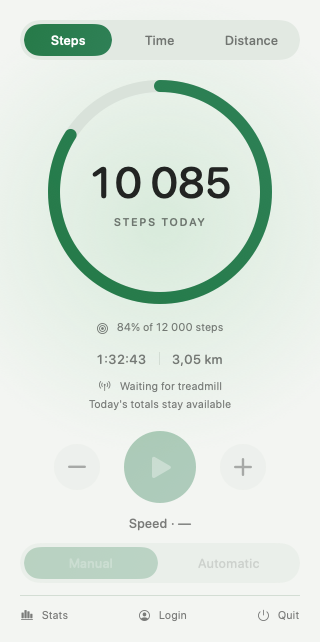

Make your goal visible.
A daily ring and live steps, time and distance. Set your own target, then watch the small wins add up.
A little more movement. Every day.
Your WalkingPad, right in your menu bar. Follow your steps, find your pace and turn another workday into a walking day.
Native SwiftUI · macOS 13+ · Apple Silicon & Intel

Actual app interface · example workout
A daily ring and live steps, time and distance. Set your own target, then watch the small wins add up.
Start, stop and adjust your treadmill over Bluetooth. Your controls are one click away from your work.
Save your walking days and explore your statistics. Add MQTT or HCGateway when you want to connect more.
Ready for your next walking day?
You'll need a compatible WalkingPad and macOS 13 or later. Model compatibility varies.
Choose a package from GitHub Releases when available, or build from source with Xcode.
Launch the app, allow Bluetooth access and turn on your WalkingPad.
Open the menu bar panel and click the goal below the ring. Start walking at your own pace.
Open source. Native to your Mac. Always close at hand.
Explore the project